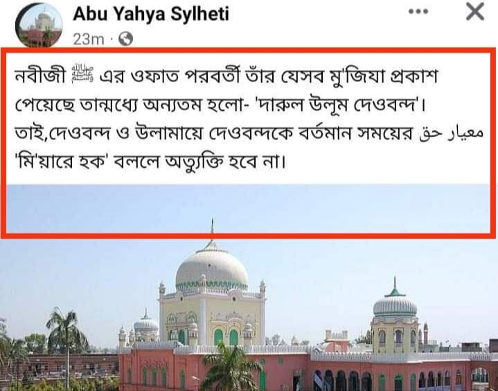

আপনারা যে অর্থে সাহাবিদের ‘মি'য়ার’ সাব্যস্ত করেন, একই অর্থে তাবেইন, তবে তাবেইন,…
১ মার্চ, ২০২৪
আপনারা যে অর্থে সাহাবিদের ‘মি'য়ার’ সাব্যস্ত করেন, একই অর্থে তাবেইন, তবে তাবেইন, আয়িম্মায়ে মুজতাহিদিন-সহ দেওবন্দকেও ‘মি'য়ারে হক’ বানিয়ে দেয়া অযৌক্তিক কিছু মনে করি না। (অলরেডি মুফতি আবুল হাসান শামসাবাদীসহ অনেক আলেম সাহাবি থেকে দেওবন্দ পর্যন্ত মি'য়ারের সীমা টেনে এনেছেন।) আপনাদের দেয়া সংজ্ঞা অনুযায়ী এ দাবি অ-মূলক নয়। সুতরাং দেওবন্দের বিরোধিতা করা মানে নিজেকে বাতিল সাব্যস্ত করা! নিজের ঈমান-আমল ধ্বংস করা!! এরকম একটা ফতোয়া আসলেও অবাক হব না।
তবে মি'য়ারের হাকিকাত যারা বুঝতে সক্ষম, তারা রাসূল ﷺ ছাড়া অন্যকিছুকে ‘মি'য়ার সাব্যস্ত করা সম্ভব নয়। কিন্তু বাস্তবতা হল, যারা ‘মিয়ারে হক’ নিয়ে কথা বলছে, তাদের অধিকাংশই এর হকিকত সম্পর্কে ওয়াকিফ হাল নয়।
আপনারা যে অর্থে সাহাবিদের ‘মি'য়ার’ সাব্যস্ত করেন, একই অর্থে তাবেইন, তবে তাবেইন, আয়িম্মায়ে মুজতাহিদিন-সহ দেওবন্দকেও ‘মি'য়ারে হক’ বানিয়ে দেয়া অযৌক্তিক কিছু মনে করি না। (অলরেডি মুফতি আবুল হাসান শামসাবাদীসহ অনেক আলেম সাহাবি থেকে দেওবন্দ পর্যন্ত মি'য়ারের সীমা টেনে এনেছেন।) আপনাদের দেয়া সংজ্ঞা অনুযায়ী এ দাবি অ-মূলক নয়। সুতরাং দেওবন্দের বিরোধিতা করা মানে নিজেকে বাতিল সাব্যস্ত করা! নিজের ঈমান-আমল ধ্বংস করা!! এরকম একটা ফতোয়া আসলেও অবাক হব না।
তবে মি'য়ারের হাকিকাত যারা বুঝতে সক্ষম, তারা রাসূল ﷺ ছাড়া অন্যকিছুকে ‘মি'য়ার সাব্যস্ত করা সম্ভব নয়। কিন্তু বাস্তবতা হল, যারা ‘মিয়ারে হক’ নিয়ে কথা বলছে, তাদের অধিকাংশই এর হকিকত সম্পর্কে ওয়াকিফ হাল নয়।
